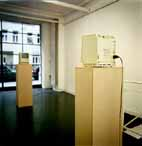
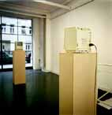

Galerie Anselm Dreher / Adib
Fricke

"Das Lächeln des Leonardo da
Vinci,
1995 /96, Sammlung Nationalgalerie SMPK Berlin
Galerie Anselm Dreher / Adib Fricke

"Das Lächeln des Leonardo da Vinci,
1995 /96, Sammlung Nationalgalerie SMPK Berlin